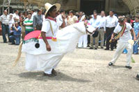

| Municipio | Fecha | Celebración |
|---|---|---|
| Flores | 15/1 | Día del Cristo Negro de Esquipulas |
| San José | 19/3 | Día de San José |
| San Benito | 3/4 | Día de San Benito de Palermo |
| Poptún | 29/4 | Día de San Pedro Mártir de Verona |
| Las Cruces | 1 al 5/5 | Día en honor a la Santa Cruz |
| Melchor de Mencos | 18/5 | Día de San Martín de Porres |
| Dolores | 30/5 | Día de la Virgen de Dolores |
| Sayaxché | 13/6 | Día de San Antonio de Padua |
| Santa Ana | 26/7 | Día de Santa Ana |
| Sn Luís | 25/8 | Día de San Luís Rey de Francia |
| San Francisco | 4/10 | Día de San Francisco de Asís |
| San Andrés | 30/11 | Día de San Andrés Apóstol |
| La libertad | 12/12 | Día de la Virgen de Guadalupe |
La Chatona Artículo principal: La Chatona En este baile se presenta una muñeca de aproximadamente dos metros de altura, y se realizada durante las fiestas patronales de los municipios y otras fiestas. La estructura de la muñeca permite que una persona entre en ella y pueda sostenerla por largo tiempo mientras baila con las personas a su alrededor.
El Caballito: Conocido también como Baile del Caballito de Tata Vicente, es un baile realizado por miembros del grupo folklórico de la Casa de la Cultura de San Juan de Dios, en el municipio de San Francisco y constituye una de la tradiciones emblemáticas del departamento. Consiste en un baile en el que una persona se introduce en una armazón en forma de caballo con una considerable cantidad de adornos y que sostiene con ambas manos durante el baile, sobresaliendo desde la cintura hacia arriba simulando el jinete, mientras que sus piernas se convierten en las del caballito.
El baile del caballito: se realiza en las fiestas patronales de los municipios del departamentos y en las fiestas patrias y es tradicional que acompañe a otros bailes tradicionales, especialmente el de la Chatona y el tradicional baile español de Moros y Cristianos.
